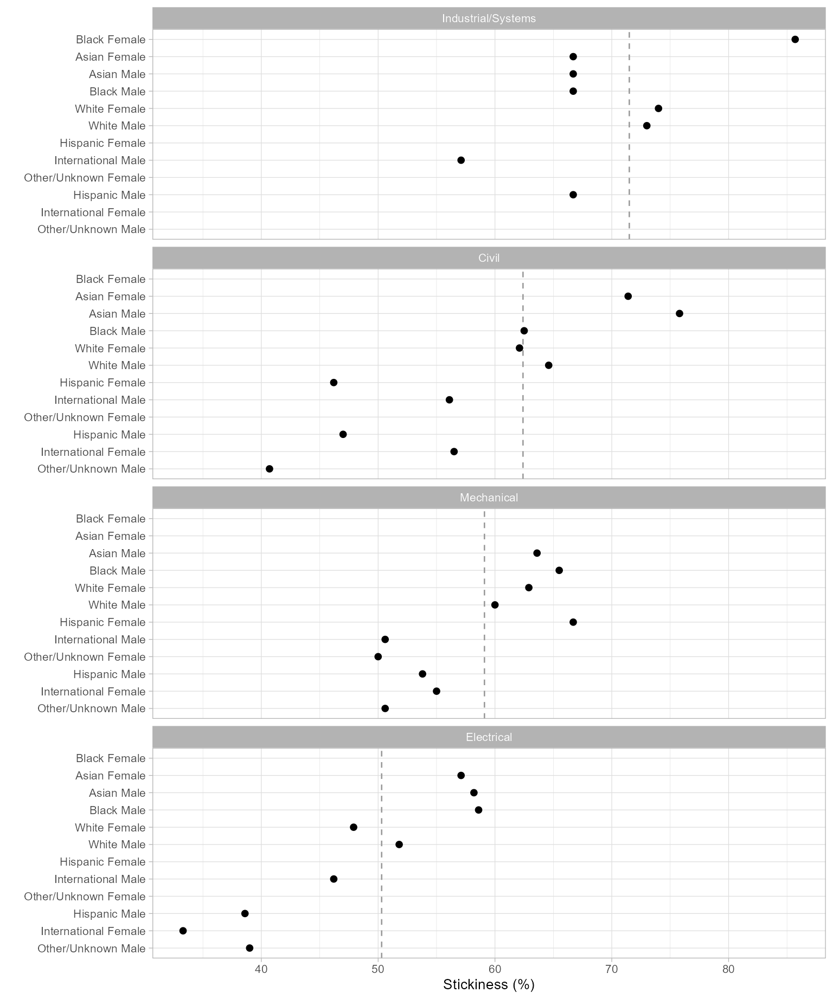

In this study we present a complete case, from initial description to graphing the results, in as concise a fashion as we can, emphasizing process over details. (Terminology and functions are described in detail in subsequent articles.) Here we emphasize how we work with longitudinal data and how midfieldr supports that process.
Like most midfieldr articles, this case is worked using data.table syntax. An alternate version using dplyr syntax is available here.
Description
We define the parameters of our case study as follows:
Data. Program CIP codes from midfieldr cip.
Student records from midfielddata student, term, and
degree.
Metric. Program stickiness: the ratio \small (S) of the number of graduates of a program \small (N_\textrm{grad}) to the number ever enrolled in the program \small (N_\textrm{ever}), including part-time students, migrators, transfers, and students admitted in any term (Ohland et al. 2012).
\small S = \frac{\small N_\textrm{grad}}{\small N_\textrm{ever}} = \frac{\small\mathrm{number\ of\ graduates\ of\ a\ program}}{\small\mathrm{number\ ever\ enrolled\ in\ the\ program}}
Programs. Civil, Electrical, Industrial/Systems, and Mechanical Engineering.
Records. Exclude records later than a student’s first degree term; filter for data sufficiency and degree seeking; no exclusions due to part-time status, transfer status, admission term, or starting program.
Population. The set of unique IDs from the above records.
Blocs. Students ever enrolled in the programs and timely graduates of the programs are required by the metric.
Groupings. We select program, race/ethnicity, and sex for grouping and summarizing.
Outcome. To calculate the metric, we construct a data frame with columns for each grouping variable (program, race/ethnicity, and sex) and the counts by group \small N_\textrm{grad} and \small N_\textrm{ever}.
Dissemination. Exclude groupings too small to preserve anonymity. Edit column names to suit the audience. Condition/transform data as needed for tables or charts.
If you are writing your own script to follow along, we use these packages in this article:
Programs
One can start an analysis with program data or with student record
data—the choice is arbitrary. We start with programs and set the results
aside until needed when constructing our blocs. Our goal in this section
is to search the CIP data table for the 6-digit codes for our programs.
The cip dataset loads with midfieldr.
Search for program codes
Unless you already know your program CIP codes, finding them entails some trial and error.
filter_cip_rows() searches dframe for
string patterns. Searching for “civil engineering” yields programs in
Engineering that we want and some in Engineering Technology that we do
not.
filter_cip_rows(cip, "civil engineering")
#> cip6name cip6
#> <char> <char>
#> 1: Civil Engineering, General 140801
#> 2: Geotechnical Engineering 140802
#> 3: Structural Engineering 140803
#> 4: Transportation and Highway Engineering 140804
#> 5: Water Resources Engineering 140805
#> 6: Civil Engineering, Other 140899
#> 7: Civil Engineering Technology, Technician 150201
#> 8: Civil Drafting and Civil Engineering CAD, CADD 151304
#> cip4name cip4
#> <char> <char>
#> 1: Civil Engineering 1408
#> 2: Civil Engineering 1408
#> 3: Civil Engineering 1408
#> 4: Civil Engineering 1408
#> 5: Civil Engineering 1408
#> 6: Civil Engineering 1408
#> 7: Civil Engineering Technologies, Technicians 1502
#> 8: Drafting, Design Engineering Technologies, Technicians 1513
#> cip2name cip2
#> <char> <char>
#> 1: Engineering 14
#> 2: Engineering 14
#> 3: Engineering 14
#> 4: Engineering 14
#> 5: Engineering 14
#> 6: Engineering 14
#> 7: Engineering Technology 15
#> 8: Engineering Technology 15These results suggest that Engineering has the 2-digit code “14” and
that Civil Engineering has the 4-digit code “1408”. We can extract Civil
Engineering alone by searching cip for lines that start
with “1408”, yielding six 6-digit codes. Regular expressions such as
“^1408” are accepted.
filter_cip_rows(cip, "^1408")
#> cip6name cip6 cip4name cip4
#> <char> <char> <char> <char>
#> 1: Civil Engineering, General 140801 Civil Engineering 1408
#> 2: Geotechnical Engineering 140802 Civil Engineering 1408
#> 3: Structural Engineering 140803 Civil Engineering 1408
#> 4: Transportation and Highway Engineering 140804 Civil Engineering 1408
#> 5: Water Resources Engineering 140805 Civil Engineering 1408
#> 6: Civil Engineering, Other 140899 Civil Engineering 1408
#> cip2name cip2
#> <char> <char>
#> 1: Engineering 14
#> 2: Engineering 14
#> 3: Engineering 14
#> 4: Engineering 14
#> 5: Engineering 14
#> 6: Engineering 14Knowing the 2-digit code for Engineering programs, our next search is
for lines that start with “14”. Note that the cip
argument takes the cip dataset as its default
value. The result is an Engineering subset of cip
with 54 rows.
engr_cip <- filter_cip_rows(cip, "^14")
engr_cip
#> cip6name cip6
#> <char> <char>
#> 1: Engineering, General 140101
#> 2: Pre-Engineering 140102
#> 3: Aerospace, Aeronautical and Astronautical, Space Engineering 140201
#> 4: Agricultural, Biological Engineering and Bioengineering 140301
#> 5: Architectural Engineering 140401
#> ---
#> 50: Mechatronics, Robotics and Automation Engineering 144201
#> 51: Biochemical Engineering 144301
#> 52: Engineering Chemistry 144401
#> 53: Biological, Biosystems Engineering 144501
#> 54: Engineering, Other 149999
#> cip4name cip4 cip2name
#> <char> <char> <char>
#> 1: Engineering, General 1401 Engineering
#> 2: Engineering, General 1401 Engineering
#> 3: Aerospace, Aeronautical and Astronautical Engineering 1402 Engineering
#> 4: Agricultural, Biological Engineering and Bioengineering 1403 Engineering
#> 5: Architectural Engineering 1404 Engineering
#> ---
#> 50: Mechatronics, Robotics and Automation Engineering 1442 Engineering
#> 51: Biochemical Engineering 1443 Engineering
#> 52: Engineering Chemistry 1444 Engineering
#> 53: Biological, Biosystems Engineering 1445 Engineering
#> 54: Engineering, Other 1499 Engineering
#> cip2
#> <char>
#> 1: 14
#> 2: 14
#> 3: 14
#> 4: 14
#> 5: 14
#> ---
#> 50: 14
#> 51: 14
#> 52: 14
#> 53: 14
#> 54: 14Next, to search this result for Electrical Engineering, we assign
engr_cip to the cip argument, yielding four
6-digit codes.
filter_cip_rows(engr_cip, "electrical")
#> cip6name cip6
#> <char> <char>
#> 1: Electrical, Electronics and Communications Engineering 141001
#> 2: Laser and Optical Engineering 141003
#> 3: Telecommunications Engineering 141004
#> 4: Electrical, Electronics and Communications Engineering, Other 141099
#> cip4name cip4 cip2name
#> <char> <char> <char>
#> 1: Electrical, Electronics and Communications Engineering 1410 Engineering
#> 2: Electrical, Electronics and Communications Engineering 1410 Engineering
#> 3: Electrical, Electronics and Communications Engineering 1410 Engineering
#> 4: Electrical, Electronics and Communications Engineering 1410 Engineering
#> cip2
#> <char>
#> 1: 14
#> 2: 14
#> 3: 14
#> 4: 14Continuing in a similar fashion, we find that our programs have the following 4-digit codes:
- Civil Engineering 1408
- Electrical Engineering 1410
- Mechanical Engineering 1419
- Industrial/Systems Engineering 1427, 1435, 1436, and 1437.
Construct the programs table
To collect all our 6-digit codes, we create a search string of the desired 4-digit codes. We drop all columns except the 6-digit names and 6-digit codes.
codes_we_want <- c("^1408", "^1410", "^1419", "^1427", "^1435", "^1436", "^1437")
programs <- filter_cip_rows(cip, codes_we_want)
programs <- programs[, .(cip6name, cip6)]
programs
#> cip6name cip6
#> <char> <char>
#> 1: Civil Engineering, General 140801
#> 2: Geotechnical Engineering 140802
#> 3: Structural Engineering 140803
#> 4: Transportation and Highway Engineering 140804
#> 5: Water Resources Engineering 140805
#> 6: Civil Engineering, Other 140899
#> 7: Electrical, Electronics and Communications Engineering 141001
#> 8: Laser and Optical Engineering 141003
#> 9: Telecommunications Engineering 141004
#> 10: Electrical, Electronics and Communications Engineering, Other 141099
#> 11: Mechanical Engineering 141901
#> 12: Systems Engineering 142701
#> 13: Industrial Engineering 143501
#> 14: Manufacturing Engineering 143601
#> 15: Operations Research 143701The program names in cip are usually too long for
effective use—user-defined names are nearly always required. So we add a
program variable with values “CE” (Civil Engineering), “EE”
(electrical), “ME” (Mechanical), and “ISE” (Industrial/Systems
Engineering). We also abbreviate a couple of terms for a slightly more
compact display.
programs[, program := fcase(
cip6 %like% "^1408", "CE",
cip6 %like% "^1410", "EE",
cip6 %like% "^1419", "ME",
cip6 %like% c("^1427|^1435|^1436|^1437"), "ISE",
default = NA_character_
)]
programs[, cip6name := gsub("Engineering", "Engng", cip6name)]
programs[, cip6name := gsub("Communications", "Commn", cip6name)]
programs
#> cip6name cip6 program
#> <char> <char> <char>
#> 1: Civil Engng, General 140801 CE
#> 2: Geotechnical Engng 140802 CE
#> 3: Structural Engng 140803 CE
#> 4: Transportation and Highway Engng 140804 CE
#> 5: Water Resources Engng 140805 CE
#> 6: Civil Engng, Other 140899 CE
#> 7: Electrical, Electronics and Commn Engng 141001 EE
#> 8: Laser and Optical Engng 141003 EE
#> 9: Telecommunications Engng 141004 EE
#> 10: Electrical, Electronics and Commn Engng, Other 141099 EE
#> 11: Mechanical Engng 141901 ME
#> 12: Systems Engng 142701 ISE
#> 13: Industrial Engng 143501 ISE
#> 14: Manufacturing Engng 143601 ISE
#> 15: Operations Research 143701 ISEOur programs data frame is complete: 15 six-digit codes are encoded
using 4 program labels. This data frame can sit in memory (or written to
file) until we’re ready to filter the blocs by program, joining data
frames by matching on the cip6 variable.
Records
For this study we load three of the midfielddata data tables.
data(student, term, degree)We usually copy the source data, giving them new names (and new
locations in memory), to keep them intact while we use the original
names — student, term, and degree
— to do our work, preventing the source data from being updated “by
reference” as we work. Reference semantics in data.table is
discussed in (Vignettes: data.table
2026).
The working data frames student, term, and
degree should always be present in our computing
environment so we can take advantage of midfieldr default argument
values. For example, add_term_cluster() accesses the
degree table to do its work. If degree is in
the environment, the following lines yield the same results:
# not run
add_term_cluster(term, midfield_degree = degree)
add_term_cluster(term, degree)
add_term_cluster(term)In this article, we use the latter form.
Select basic columns
Convenient for viewing data frames at intermediate stages. We reduce the number of columns to those required by other midfieldr functions plus the key or composite key variables of the data tables.
student <- select_record_cols(student, type = "s")
term <- select_record_cols(term, "t")
degree <- select_record_cols(degree, "d")look_at() is a midfieldr convenience function that wraps
base::str().
look_at(student)
#> Classes 'data.table' and 'data.frame': 97555 obs. of 3 variables:
#> $ mcid: chr "MCID3111142225" "MCID3111142283" "MCID3111142290" "MCID3111142"..
#> $ race: chr "Asian" "Asian" "Asian" "Asian" ...
#> $ sex : chr "Male" "Female" "Male" "Male" ...
look_at(term)
#> Classes 'data.table' and 'data.frame': 639915 obs. of 5 variables:
#> $ mcid : chr "MCID3111142225" "MCID3111142283" "MCID3111142283" "MCID"..
#> $ term : chr "19881" "19881" "19883" "19885" ...
#> $ cip6 : chr "140901" "240102" "240102" "190601" ...
#> $ institution: chr "Institution B" "Institution J" "Institution J" "Institu"..
#> $ level : chr "01 First-year" "01 First-year" "01 First-year" "01 Firs"..
look_at(degree)
#> Classes 'data.table' and 'data.frame': 49665 obs. of 3 variables:
#> $ mcid : chr "MCID3111142225" "MCID3111142290" "MCID3111142294" "MCID"..
#> $ term_degree: chr "19881" "19921" "19903" "19921" ...
#> $ cip6 : chr "141001" "141001" "141001" "141001" ...Exclude post-baccalaureate terms
We are not generally interested in terms beyond the first degree term, so we identify and exclude terms later than the first degree term. Multiple degrees earned in the first degree term are retained, but any courses, terms, or degrees after the first baccalaureate are excluded.
add_term_cluster() adds a column of labels indicating
that a term belongs to one of three clusters: terms that are prior to,
equal to, or subsequent to the student’s first degree term.
term <- add_term_cluster(term)
degree <- add_term_cluster(degree)
look_at(term)
#> Classes 'data.table' and 'data.frame': 639915 obs. of 7 variables:
#> $ mcid : chr "MCID3111142225" "MCID3111142283" "MCID3111142283""..
#> $ term : chr "19881" "19881" "19883" "19885" ...
#> $ cip6 : chr "140901" "240102" "240102" "190601" ...
#> $ institution : chr "Institution B" "Institution J" "Institution J" "I"..
#> $ level : chr "01 First-year" "01 First-year" "01 First-year" "0"..
#> $ first_degree_term: chr "19881" NA NA NA ...
#> $ term_cluster : chr "first-degree" "pre-degree" "pre-degree" "pre-degr"..
look_at(degree)
#> Classes 'data.table' and 'data.frame': 49665 obs. of 5 variables:
#> $ mcid : chr "MCID3111142225" "MCID3111142290" "MCID3111142294""..
#> $ term_degree : chr "19881" "19921" "19903" "19921" ...
#> $ cip6 : chr "141001" "141001" "141001" "141001" ...
#> $ first_degree_term: chr "19881" "19921" "19903" "19921" ...
#> $ term_cluster : chr "first-degree" "first-degree" "first-degree" "firs"..To quickly assess the relative size of the three clusters, we count
observations by the term_cluster variable.
term[, .N, by = c("term_cluster")][order(-N)]
#> term_cluster N
#> <char> <int>
#> 1: pre-degree 598477
#> 2: first-degree 34440
#> 3: post-first-degree 6998
degree[, .N, by = c("term_cluster")][order(-N)]
#> term_cluster N
#> <char> <int>
#> 1: first-degree 49618
#> 2: post-first-degree 47We exclude the rows labeled “post-first-degree.” This step does not
apply to the student table because it contains no term
information.
term <- term[!"post-first-degree", on = "term_cluster"]
degree <- degree[!"post-first-degree", on = "term_cluster"]We can drop the added columns by applying
select_record_cols() again.
term <- select_record_cols(term, "t")
degree <- select_record_cols(degree, "d")
look_at(term)
#> Classes 'data.table' and 'data.frame': 632917 obs. of 5 variables:
#> $ mcid : chr "MCID3111142225" "MCID3111142283" "MCID3111142283" "MCID"..
#> $ term : chr "19881" "19881" "19883" "19885" ...
#> $ cip6 : chr "140901" "240102" "240102" "190601" ...
#> $ institution: chr "Institution B" "Institution J" "Institution J" "Institu"..
#> $ level : chr "01 First-year" "01 First-year" "01 First-year" "01 Firs"..
look_at(degree)
#> Classes 'data.table' and 'data.frame': 49618 obs. of 3 variables:
#> $ mcid : chr "MCID3111142225" "MCID3111142290" "MCID3111142294" "MCID"..
#> $ term_degree: chr "19881" "19921" "19903" "19921" ...
#> $ cip6 : chr "141001" "141001" "141001" "141001" ...Filter for data sufficiency
The next few steps are easier to follow if we start with the unique IDs from our current term table as our draft population. We filter these IDs for data sufficiency and degree-seeking, then filter the records to retain those IDs only.
DT <- term[, .(mcid)]
DT <- unique(DT)
DT
#> mcid
#> <char>
#> 1: MCID3111142225
#> 2: MCID3111142283
#> 3: MCID3111142290
#> 4: MCID3111142294
#> 5: MCID3111142299
#> ---
#> 97532: MCID3112898886
#> 97533: MCID3112898890
#> 97534: MCID3112898894
#> 97535: MCID3112898895
#> 97536: MCID3112898940The data sufficiency criterion limits student records to those for which available data are sufficient to credibly assess timely completion. To make that assessment, we need the last term in which a student’s degree completion would be considered timely—in many cases, 6 years after admission.
add_timely_term() adds a column of timely completion
terms, encoded YYYYT.
DT <- add_timely_term(DT)
DT
#> mcid term_i level_i adj_span timely_term
#> <char> <char> <char> <num> <char>
#> 1: MCID3111142225 19881 01 First-year 6 19933
#> 2: MCID3111142283 19881 01 First-year 6 19933
#> 3: MCID3111142290 19881 01 First-year 6 19933
#> 4: MCID3111142294 19881 01 First-year 6 19933
#> 5: MCID3111142299 19881 01 First-year 6 19933
#> ---
#> 97532: MCID3112898886 20181 01 First-year 6 20233
#> 97533: MCID3112898890 20181 01 First-year 6 20233
#> 97534: MCID3112898894 20181 01 First-year 6 20233
#> 97535: MCID3112898895 20181 01 First-year 6 20233
#> 97536: MCID3112898940 20181 01 First-year 6 20233add_data_sufficiency() (which requires the
timely_term column) adds a column of labels indicating that
a student ID should be included (or excluded) because for that student,
the institution’s data range satisfies (or does not satisfy) the data
sufficiency criteria.
DT <- add_data_sufficiency(DT)
DT
#> mcid level_i adj_span timely_term term_i lower_limit
#> <char> <char> <num> <char> <char> <char>
#> 1: MCID3111142225 01 First-year 6 19933 19881 19881
#> 2: MCID3111142283 01 First-year 6 19933 19881 19881
#> 3: MCID3111142290 01 First-year 6 19933 19881 19881
#> 4: MCID3111142294 01 First-year 6 19933 19881 19881
#> 5: MCID3111142299 01 First-year 6 19933 19881 19881
#> ---
#> 97532: MCID3112898886 01 First-year 6 20233 20181 19881
#> 97533: MCID3112898890 01 First-year 6 20233 20181 19881
#> 97534: MCID3112898894 01 First-year 6 20233 20181 19881
#> 97535: MCID3112898895 01 First-year 6 20233 20181 19881
#> 97536: MCID3112898940 01 First-year 6 20233 20181 19881
#> upper_limit data_sufficiency
#> <char> <char>
#> 1: 20181 exclude-lower
#> 2: 20096 exclude-lower
#> 3: 20096 exclude-lower
#> 4: 20096 exclude-lower
#> 5: 20096 exclude-lower
#> ---
#> 97532: 20181 exclude-upper
#> 97533: 20181 exclude-upper
#> 97534: 20181 exclude-upper
#> 97535: 20181 exclude-upper
#> 97536: 20181 exclude-upperAgain, a quick assessment of the relative size of the three possible labels.
DT[, .N, by = c("data_sufficiency")][order(-N)]
#> data_sufficiency N
#> <char> <int>
#> 1: include 76865
#> 2: exclude-upper 17925
#> 3: exclude-lower 2746We retain the rows labeled “include” for which we have sufficient data from the institution and retain the ID column only.
DT <- DT["include", on = "data_sufficiency", .(mcid)]
DT
#> mcid
#> <char>
#> 1: MCID3111142689
#> 2: MCID3111142782
#> 3: MCID3111142881
#> 4: MCID3111142884
#> 5: MCID3111142893
#> ---
#> 76861: MCID3112727985
#> 76862: MCID3112730841
#> 76863: MCID3112785480
#> 76864: MCID3112800920
#> 76865: MCID3112870009Filter for degree seeking
We require all students in our study to be degree-seeking. By design,
the student table contains only degree-seeking students. We
inner-join the ID column from the student table, matching
on mcid. In effect, the inner join filters our population
to remove any non-degree-seeking students.
student_cols <- student[, .(mcid)]
DT <- student_cols[DT, on = "mcid", nomatch = NULL]
DT
#> mcid
#> <char>
#> 1: MCID3111142689
#> 2: MCID3111142782
#> 3: MCID3111142881
#> 4: MCID3111142884
#> 5: MCID3111142893
#> ---
#> 76861: MCID3112727985
#> 76862: MCID3112730841
#> 76863: MCID3112785480
#> 76864: MCID3112800920
#> 76865: MCID3112870009It happens that all students in this case are degree-seeking, so this step did not reduce the size of our population. (We include the step to illustrate our complete process.)
Finalize the records
The previous column of IDs is our baseline population.
population <- copy(DT)
population <- unique(population)
population
#> mcid
#> <char>
#> 1: MCID3111142689
#> 2: MCID3111142782
#> 3: MCID3111142881
#> 4: MCID3111142884
#> 5: MCID3111142893
#> ---
#> 76861: MCID3112727985
#> 76862: MCID3112730841
#> 76863: MCID3112785480
#> 76864: MCID3112800920
#> 76865: MCID3112870009We now filter the records to retain only those observations
associated with the IDs in our population data frame. We use inner joins
between population and student, term, and
degree to do so.
student <- population[student, on = "mcid", nomatch = NULL]
term <- population[term, on = "mcid", nomatch = NULL]
degree <- population[degree, on = "mcid", nomatch = NULL]Ensuring rows are unique yields the baseline records in their final configuration.
These three data frames are our final set of records on which all further analysis is based. We’ve reduced the number of unique students from 97,555 in the original source data to 76,865 that have met our several constraints.
look_at(student)
#> Classes 'data.table' and 'data.frame': 76865 obs. of 3 variables:
#> $ mcid: chr "MCID3111142689" "MCID3111142782" "MCID3111142881" "MCID3111142"..
#> $ race: chr "Hispanic" "Hispanic" "International" "International" ...
#> $ sex : chr "Female" "Female" "Male" "Male" ...
look_at(term)
#> Classes 'data.table' and 'data.frame': 525446 obs. of 5 variables:
#> $ mcid : chr "MCID3111142689" "MCID3111142782" "MCID3111142782" "MCID"..
#> $ term : chr "19883" "19883" "19885" "19893" ...
#> $ cip6 : chr "090401" "260101" "260101" "260101" ...
#> $ institution: chr "Institution B" "Institution J" "Institution J" "Institu"..
#> $ level : chr "01 First-year" "01 First-year" "02 Second-year" "02 Sec"..
look_at(degree)
#> Classes 'data.table' and 'data.frame': 43847 obs. of 3 variables:
#> $ mcid : chr "MCID3111142689" "MCID3111142782" "MCID3111142881" "MCID"..
#> $ term_degree: chr "19913" "19903" "19894" "19901" ...
#> $ cip6 : chr "090401" "260101" "450601" "141001" ...Blocs and groupings
The work up to this point is applicable to most studies. In summary, we have configured our:
-
programs6-digit program codes, names, and custom labels -
student, term,anddegreerecords with post-baccalaureate terms removed and filtered for data sufficiency and degree seeking -
populationthe unique IDs in these records
The next steps depend on the metric and the groupings we assigned at the beginning. The stickiness metric requires these blocs:
- students with timely completion from the study programs
- students ever enrolled in these programs
And we selected these groupings:
- program
- race/ethnicity
- sex
We have a lot of flexibility in the order in which we construct our blocs and groupings, so what follows is only one of several effective solutions. Our approach here is to construct a bloc, filter by program, join the demographics, and repeat for the next bloc.
Timely graduates
We start with the baseline population. Like we did with the original
source data files, we copy it to protect population from
“by reference” changes.
DT <- copy(population)
DT
#> mcid
#> <char>
#> 1: MCID3111142689
#> 2: MCID3111142782
#> 3: MCID3111142881
#> 4: MCID3111142884
#> 5: MCID3111142893
#> ---
#> 76861: MCID3112727985
#> 76862: MCID3112730841
#> 76863: MCID3112785480
#> 76864: MCID3112800920
#> 76865: MCID3112870009Filter for timely completion
We want to retain timely graduates, so first we add the timely completion term (the same term we used for determining data sufficiency) to our population then apply the completion status function.
add_completion_status() adds a column of labels
indicating that program completion was timely, late, or NA (for
non-completers).
DT <- add_timely_term(DT)
DT <- add_completion_status(DT)
DT
#> mcid term_i level_i adj_span timely_term term_degree
#> <char> <char> <char> <num> <char> <char>
#> 1: MCID3111142689 19883 01 First-year 6 19941 19913
#> 2: MCID3111142782 19883 01 First-year 6 19941 19903
#> 3: MCID3111142881 19893 01 First-year 6 19951 19894
#> 4: MCID3111142884 19883 01 First-year 6 19941 <NA>
#> 5: MCID3111142893 19883 01 First-year 6 19941 <NA>
#> ---
#> 76861: MCID3112727985 20114 01 First-year 6 20173 <NA>
#> 76862: MCID3112730841 20121 01 First-year 6 20173 20164
#> 76863: MCID3112785480 20071 01 First-year 6 20123 <NA>
#> 76864: MCID3112800920 20101 01 First-year 6 20153 <NA>
#> 76865: MCID3112870009 19951 01 First-year 6 20003 <NA>
#> completion_status
#> <char>
#> 1: timely
#> 2: timely
#> 3: timely
#> 4: <NA>
#> 5: <NA>
#> ---
#> 76861: <NA>
#> 76862: timely
#> 76863: <NA>
#> 76864: <NA>
#> 76865: <NA>Another brief assessment. Here we compare the relative size of the three possible status labels.
DT[, .N, by = c("completion_status")][order(-N)]
#> completion_status N
#> <char> <int>
#> 1: timely 40430
#> 2: <NA> 33089
#> 3: late 3346We retain the rows labeled “timely” and the drop all the columns except the ID column.
DT <- DT["timely", on = "completion_status", .(mcid)]
DT
#> mcid
#> <char>
#> 1: MCID3111142689
#> 2: MCID3111142782
#> 3: MCID3111142881
#> 4: MCID3111142965
#> 5: MCID3111143066
#> ---
#> 40426: MCID3112675459
#> 40427: MCID3112675472
#> 40428: MCID3112692944
#> 40429: MCID3112694738
#> 40430: MCID3112730841Filter by program
We left-join the CIP column from the degree table,
matching on mcid. That we increase the number of rows
indicates that some students have more than one degree in their first
degree term.
degree_cols <- degree[, .(mcid, cip6)]
DT <- degree_cols[DT, on = "mcid"]
DT
#> mcid cip6
#> <char> <char>
#> 1: MCID3111142689 090401
#> 2: MCID3111142782 260101
#> 3: MCID3111142881 450601
#> 4: MCID3111142965 141001
#> 5: MCID3111143066 090401
#> ---
#> 40486: MCID3112675459 261310
#> 40487: MCID3112675472 500703
#> 40488: MCID3112692944 090101
#> 40489: MCID3112694738 230101
#> 40490: MCID3112730841 040401Now we use an inner-join with our programs data frame,
matching on cip6, to retain only those students who
complete one of our study programs. We retain the program
column and drop the cip6 column.
programs_cols <- programs[, .(cip6, program)]
DT <- programs_cols[DT, on = "cip6", nomatch = NULL]
DT[, cip6 := NULL]
DT
#> program mcid
#> <char> <char>
#> 1: EE MCID3111142965
#> 2: EE MCID3111145102
#> 3: EE MCID3111146537
#> 4: EE MCID3111146674
#> 5: ISE MCID3111150194
#> ---
#> 3259: ME MCID3112618553
#> 3260: ME MCID3112618574
#> 3261: ME MCID3112618976
#> 3262: EE MCID3112619484
#> 3263: ME MCID3112641535Another brief assessment. Here we compare the relative numbers of program graduates.
Join demographics
To add columns for student demographics, we left-join selected
columns from the student table, matching on
mcid.
DT <- student[DT, on = "mcid"]
DT
#> mcid race sex program
#> <char> <char> <char> <char>
#> 1: MCID3111142965 International Male EE
#> 2: MCID3111145102 White Male EE
#> 3: MCID3111146537 Asian Female EE
#> 4: MCID3111146674 Asian Male EE
#> 5: MCID3111150194 Black Male ISE
#> ---
#> 3259: MCID3112618553 International Male ME
#> 3260: MCID3112618574 International Male ME
#> 3261: MCID3112618976 White Male ME
#> 3262: MCID3112619484 White Male EE
#> 3263: MCID3112641535 White Male MEBloc of timely graduates
This is the bloc of timely graduates required by our metric. We add a
bloc variable with the value “grad” and ensure we have
unique rows.
graduates <- copy(DT)
graduates[, bloc := "grad"]
graduates <- unique(graduates)
graduates
#> mcid race sex program bloc
#> <char> <char> <char> <char> <char>
#> 1: MCID3111142965 International Male EE grad
#> 2: MCID3111145102 White Male EE grad
#> 3: MCID3111146537 Asian Female EE grad
#> 4: MCID3111146674 Asian Male EE grad
#> 5: MCID3111150194 Black Male ISE grad
#> ---
#> 3259: MCID3112618553 International Male ME grad
#> 3260: MCID3112618574 International Male ME grad
#> 3261: MCID3112618976 White Male ME grad
#> 3262: MCID3112619484 White Male EE grad
#> 3263: MCID3112641535 White Male ME gradEver enrolled
Again we start with the baseline population.
DT <- copy(population)
DT
#> mcid
#> <char>
#> 1: MCID3111142689
#> 2: MCID3111142782
#> 3: MCID3111142881
#> 4: MCID3111142884
#> 5: MCID3111142893
#> ---
#> 76861: MCID3112727985
#> 76862: MCID3112730841
#> 76863: MCID3112785480
#> 76864: MCID3112800920
#> 76865: MCID3112870009Filter by program
We left-join the CIP column from the term table,
matching on mcid.
term_cols <- term[, .(mcid, cip6)]
term_cols <- unique(term_cols)
DT <- term_cols[DT, on = "mcid"]
DT
#> mcid cip6
#> <char> <char>
#> 1: MCID3111142689 090401
#> 2: MCID3111142782 260101
#> 3: MCID3111142881 450601
#> 4: MCID3111142884 260406
#> 5: MCID3111142893 400801
#> ---
#> 126164: MCID3112785480 240102
#> 126165: MCID3112785480 261201
#> 126166: MCID3112800920 240102
#> 126167: MCID3112800920 240199
#> 126168: MCID3112870009 240102We repeat the process we used earlier to inner-join our
programs data frame, matching on cip6.
programs_cols <- programs[, .(cip6, program)]
DT <- programs_cols[DT, on = "cip6", nomatch = NULL]
DT[, cip6 := NULL]With the CIP code removed, we filter for unique rows. This is an important step because a student may switch CIP codes yet stay within a program as defined by our custom labels. We want to avoid counting that student as ever-enrolled more than once.
DT <- unique(DT)
DT
#> program mcid
#> <char> <char>
#> 1: EE MCID3111142965
#> 2: EE MCID3111145102
#> 3: EE MCID3111146537
#> 4: EE MCID3111146674
#> 5: ISE MCID3111150194
#> ---
#> 5579: EE MCID3112619484
#> 5580: ME MCID3112619666
#> 5581: ME MCID3112641399
#> 5582: ME MCID3112641535
#> 5583: ME MCID3112698681Another brief assessment. Here we compare the relative numbers of students ever enrolled in our programs.
Join demographics
Again, we left-join selected columns from the student
table, matching on mcid.
DT <- student[DT, on = "mcid"]
DT
#> mcid race sex program
#> <char> <char> <char> <char>
#> 1: MCID3111142965 International Male EE
#> 2: MCID3111145102 White Male EE
#> 3: MCID3111146537 Asian Female EE
#> 4: MCID3111146674 Asian Male EE
#> 5: MCID3111150194 Black Male ISE
#> ---
#> 5579: MCID3112619484 White Male EE
#> 5580: MCID3112619666 White Male ME
#> 5581: MCID3112641399 White Male ME
#> 5582: MCID3112641535 White Male ME
#> 5583: MCID3112698681 White Male MEBloc of ever-enrolled
This is the bloc of students ever enrolled in our programs required
by our metric. We add a bloc variable with the value “ever”
and ensure we have unique rows.
ever_enrolled <- copy(DT)
ever_enrolled[, bloc := "ever"]
ever_enrolled <- unique(ever_enrolled)
ever_enrolled
#> mcid race sex program bloc
#> <char> <char> <char> <char> <char>
#> 1: MCID3111142965 International Male EE ever
#> 2: MCID3111145102 White Male EE ever
#> 3: MCID3111146537 Asian Female EE ever
#> 4: MCID3111146674 Asian Male EE ever
#> 5: MCID3111150194 Black Male ISE ever
#> ---
#> 5579: MCID3112619484 White Male EE ever
#> 5580: MCID3112619666 White Male ME ever
#> 5581: MCID3112641399 White Male ME ever
#> 5582: MCID3112641535 White Male ME ever
#> 5583: MCID3112698681 White Male ME everOutcomes
Combining the two data frames (blocs) by rows, we obtain the data structure we need for grouping and summarizing.
DT <- rbindlist(list(graduates, ever_enrolled), use.names = TRUE)
DT
#> mcid race sex program bloc
#> <char> <char> <char> <char> <char>
#> 1: MCID3111142965 International Male EE grad
#> 2: MCID3111145102 White Male EE grad
#> 3: MCID3111146537 Asian Female EE grad
#> 4: MCID3111146674 Asian Male EE grad
#> 5: MCID3111150194 Black Male ISE grad
#> ---
#> 8842: MCID3112619484 White Male EE ever
#> 8843: MCID3112619666 White Male ME ever
#> 8844: MCID3112641399 White Male ME ever
#> 8845: MCID3112641535 White Male ME ever
#> 8846: MCID3112698681 White Male ME everGroup and summarize
Count the numbers of observations for each combination of the grouping variables.
DT <- DT[, .N, by = c("bloc", "program", "race", "sex")]
DT
#> bloc program race sex N
#> <char> <char> <char> <char> <int>
#> 1: grad EE International Male 90
#> 2: grad EE White Male 439
#> 3: grad EE Asian Female 12
#> 4: grad EE Asian Male 71
#> 5: grad ISE Black Male 6
#> ---
#> 94: ever EE Native American Female 1
#> 95: ever CE Other/Unknown Female 5
#> 96: ever ME Native American Male 5
#> 97: ever ME Other/Unknown Female 8
#> 98: ever CE Native American Female 1Reshape
Reshaping the data frame to calculate the metric.
Transform from block-record form to row-record form. The
N column values are moved to two new columns,
ever and grad, one for each bloc, leaving the
grouping variables (program, race/ethnicity, and sex) in place. This
operation is known by a number of different names, e.g., pivot,
crosstab, unstack, spread, or widen (Mount and Zumel
2019). The result has the data structure we called out in our
project description for calculating the metric.
DT <- dcast(DT, program + sex + race ~ bloc, value.var = "N", fill = 0)
setkey(DT, NULL)
DT
#> program sex race ever grad
#> <char> <char> <char> <int> <int>
#> 1: CE Female Asian 14 10
#> 2: CE Female Black 4 1
#> 3: CE Female Hispanic 13 6
#> 4: CE Female International 23 13
#> 5: CE Female Native American 1 1
#> ---
#> 46: ME Male Hispanic 78 42
#> 47: ME Male International 176 89
#> 48: ME Male Native American 5 1
#> 49: ME Male Other/Unknown 80 41
#> 50: ME Male White 1584 952Calculate the metric
Completes the initial analysis.
Stickiness is the ratio of the number of graduates to the number ever enrolled, expressed as a percentage. Stickiness is calculated for each combination of program, race/ethnicity, and sex.
DT[, stickiness := round(100 * grad / ever, 1)]
setkey(DT, NULL)
DT[order(-grad, -ever)]
#> program sex race ever grad stickiness
#> <char> <char> <char> <int> <int> <num>
#> 1: ME Male White 1584 952 60.1
#> 2: CE Male White 943 612 64.9
#> 3: EE Male White 845 439 52.0
#> 4: CE Female White 260 162 62.3
#> 5: ME Female White 212 134 63.2
#> 6: ISE Male White 178 130 73.0
#> 7: EE Male International 194 90 46.4
#> 8: ME Male International 176 89 50.6
#> 9: EE Male Asian 122 71 58.2
#> 10: EE Female White 117 56 47.9
#> 11: CE Male International 97 55 56.7
#> 12: ISE Female White 73 54 74.0
#> 13: ME Male Asian 76 49 64.5
#> 14: ME Male Hispanic 78 42 53.8
#> 15: ME Male Other/Unknown 80 41 51.2
#> 16: CE Male Hispanic 66 31 47.0
#> 17: CE Male Asian 30 25 83.3
#> 18: ME Male Black 29 19 65.5
#> 19: EE Male Hispanic 44 17 38.6
#> 20: EE Male Black 29 17 58.6
#> 21: EE Male Other/Unknown 40 16 40.0
#> 22: ISE Male Asian 21 14 66.7
#> 23: CE Female International 23 13 56.5
#> 24: EE Female Asian 21 12 57.1
#> 25: ISE Male International 21 12 57.1
#> 26: CE Male Other/Unknown 27 11 40.7
#> 27: ME Female International 19 11 57.9
#> 28: ISE Female Asian 15 10 66.7
#> 29: CE Female Asian 14 10 71.4
#> 30: EE Female International 27 9 33.3
#> 31: ME Female Hispanic 12 8 66.7
#> 32: CE Female Hispanic 13 6 46.2
#> 33: ISE Male Black 9 6 66.7
#> 34: ISE Female Black 7 6 85.7
#> 35: CE Male Black 8 5 62.5
#> 36: ME Female Other/Unknown 8 4 50.0
#> 37: ISE Male Hispanic 6 4 66.7
#> 38: EE Female Hispanic 8 3 37.5
#> 39: EE Female Other/Unknown 7 3 42.9
#> 40: EE Female Black 6 3 50.0
#> 41: CE Female Other/Unknown 5 3 60.0
#> 42: ISE Female International 6 2 33.3
#> 43: ME Female Black 3 2 66.7
#> 44: ME Female Asian 7 1 14.3
#> 45: ME Male Native American 5 1 20.0
#> 46: CE Female Black 4 1 25.0
#> 47: CE Male Native American 3 1 33.3
#> 48: CE Female Native American 1 1 100.0
#> 49: EE Male Native American 3 0 0.0
#> 50: EE Female Native American 1 0 0.0
#> program sex race ever grad stickiness
#> <char> <char> <char> <int> <int> <num>Dissemination
We take several additional steps before disseminating these results.
To preserve the anonymity of the people involved, we remove observations with \small N or fewer observations. When dealing with the full MIDFIELD research data, we typically use \small N = 10, but for these practice data we illustrate the procedure using \small N = 3.
DT <- DT[grad > 3]
DT
#> program sex race ever grad stickiness
#> <char> <char> <char> <int> <int> <num>
#> 1: CE Female Asian 14 10 71.4
#> 2: CE Female Hispanic 13 6 46.2
#> 3: CE Female International 23 13 56.5
#> 4: CE Female White 260 162 62.3
#> 5: CE Male Asian 30 25 83.3
#> ---
#> 33: ME Male Black 29 19 65.5
#> 34: ME Male Hispanic 78 42 53.8
#> 35: ME Male International 176 89 50.6
#> 36: ME Male Other/Unknown 80 41 51.2
#> 37: ME Male White 1584 952 60.1We have found it useful to report such data with a variable that combines race/ethnicity and sex.
DT[, people := paste(race, sex)]
setcolorder(DT, c("program", "race", "sex", "people"))
DT
#> program race sex people ever grad stickiness
#> <char> <char> <char> <char> <int> <int> <num>
#> 1: CE Asian Female Asian Female 14 10 71.4
#> 2: CE Hispanic Female Hispanic Female 13 6 46.2
#> 3: CE International Female International Female 23 13 56.5
#> 4: CE White Female White Female 260 162 62.3
#> 5: CE Asian Male Asian Male 30 25 83.3
#> ---
#> 33: ME Black Male Black Male 29 19 65.5
#> 34: ME Hispanic Male Hispanic Male 78 42 53.8
#> 35: ME International Male International Male 176 89 50.6
#> 36: ME Other/Unknown Male Other/Unknown Male 80 41 51.2
#> 37: ME White Male White Male 1584 952 60.1Readers can more readily interpret our charts and tables if the programs are unabbreviated.
DT[, program := fcase(
program %like% "CE", "Civil",
program %like% "EE", "Electrical",
program %like% "ME", "Mechanical",
program %like% "ISE", "Industrial/Systems"
)]
DT
#> program race sex people ever grad stickiness
#> <char> <char> <char> <char> <int> <int> <num>
#> 1: Civil Asian Female Asian Female 14 10 71.4
#> 2: Civil Hispanic Female Hispanic Female 13 6 46.2
#> 3: Civil International Female International Female 23 13 56.5
#> 4: Civil White Female White Female 260 162 62.3
#> 5: Civil Asian Male Asian Male 30 25 83.3
#> ---
#> 33: Mechanical Black Male Black Male 29 19 65.5
#> 34: Mechanical Hispanic Male Hispanic Male 78 42 53.8
#> 35: Mechanical International Male International Male 176 89 50.6
#> 36: Mechanical Other/Unknown Male Other/Unknown Male 80 41 51.2
#> 37: Mechanical White Male White Male 1584 952 60.1Table
Omit columns that won’t appear in the table.
DT_table <- copy(DT)
DT_table[, c("race", "sex", "ever", "grad") := NULL]
DT_table
#> program people stickiness
#> <char> <char> <num>
#> 1: Civil Asian Female 71.4
#> 2: Civil Hispanic Female 46.2
#> 3: Civil International Female 56.5
#> 4: Civil White Female 62.3
#> 5: Civil Asian Male 83.3
#> ---
#> 33: Mechanical Black Male 65.5
#> 34: Mechanical Hispanic Male 53.8
#> 35: Mechanical International Male 50.6
#> 36: Mechanical Other/Unknown Male 51.2
#> 37: Mechanical White Male 60.1Transform the data from block-records to row-records with one row per “people” category (race/ethnicity/sex grouping).
DT_table <- dcast(DT_table, people ~ program, value.var = "stickiness")
setnames(DT_table, old = "people", new = "People", skip_absent = TRUE)
setkey(DT_table, NULL)
DT_table
#> People Civil Electrical Industrial/Systems Mechanical
#> <char> <num> <num> <num> <num>
#> 1: Asian Female 71.4 57.1 66.7 NA
#> 2: Asian Male 83.3 58.2 66.7 64.5
#> 3: Black Female NA NA 85.7 NA
#> 4: Black Male 62.5 58.6 66.7 65.5
#> 5: Hispanic Female 46.2 NA NA 66.7
#> 6: Hispanic Male 47.0 38.6 66.7 53.8
#> 7: International Female 56.5 33.3 NA 57.9
#> 8: International Male 56.7 46.4 57.1 50.6
#> 9: Other/Unknown Female NA NA NA 50.0
#> 10: Other/Unknown Male 40.7 40.0 NA 51.2
#> 11: White Female 62.3 47.9 74.0 63.2
#> 12: White Male 64.9 52.0 73.0 60.1Format the table for publication.
library(gt)
DT_table |>
gt() |>
tab_caption("Table 1. Engineering program stickiness (%)") |>
tab_options(table.font.size = "small") |>
opt_stylize(style = 1, color = "gray") |>
tab_style(
style = list(cell_fill(color = "#c7eae5")),
locations = cells_column_labels(columns = everything())
)| People | Civil | Electrical | Industrial/Systems | Mechanical |
|---|---|---|---|---|
| Asian Female | 71.4 | 57.1 | 66.7 | NA |
| Asian Male | 83.3 | 58.2 | 66.7 | 64.5 |
| Black Female | NA | NA | 85.7 | NA |
| Black Male | 62.5 | 58.6 | 66.7 | 65.5 |
| Hispanic Female | 46.2 | NA | NA | 66.7 |
| Hispanic Male | 47.0 | 38.6 | 66.7 | 53.8 |
| International Female | 56.5 | 33.3 | NA | 57.9 |
| International Male | 56.7 | 46.4 | 57.1 | 50.6 |
| Other/Unknown Female | NA | NA | NA | 50.0 |
| Other/Unknown Male | 40.7 | 40.0 | NA | 51.2 |
| White Female | 62.3 | 47.9 | 74.0 | 63.2 |
| White Male | 64.9 | 52.0 | 73.0 | 60.1 |
Chart
To use ggplot(), we want the data in its block-record
form.
DT_chart <- copy(DT)
DT_chart
#> program race sex people ever grad stickiness
#> <char> <char> <char> <char> <int> <int> <num>
#> 1: Civil Asian Female Asian Female 14 10 71.4
#> 2: Civil Hispanic Female Hispanic Female 13 6 46.2
#> 3: Civil International Female International Female 23 13 56.5
#> 4: Civil White Female White Female 260 162 62.3
#> 5: Civil Asian Male Asian Male 30 25 83.3
#> ---
#> 33: Mechanical Black Male Black Male 29 19 65.5
#> 34: Mechanical Hispanic Male Hispanic Male 78 42 53.8
#> 35: Mechanical International Male International Male 176 89 50.6
#> 36: Mechanical Other/Unknown Male Other/Unknown Male 80 41 51.2
#> 37: Mechanical White Male White Male 1584 952 60.1With one quantitative variable (stickiness) for every combination of the levels of two categorical variables (program and people), these are multiway data (Cleveland 1993). How one orders the categorical variables is critical for visualizing effects.
order_multiway() converts the two categorical variables
to ordered factors to support the ordering of rows and panels in the
chart. The calculated stickiness values by group—which determine the
ordering—are added in new columns.
DT_chart <- order_multiway(DT_chart,
quantity = "stickiness",
categories = c("program", "people"),
method = "percent",
ratio_of = c("grad", "ever")
)
DT_chart
#> program people grad ever stickiness race sex
#> <fctr> <fctr> <num> <num> <num> <char> <char>
#> 1: Civil Asian Female 10 14 71.4 Asian Female
#> 2: Civil Hispanic Female 6 13 46.2 Hispanic Female
#> 3: Civil International Female 13 23 56.5 International Female
#> 4: Civil White Female 162 260 62.3 White Female
#> 5: Civil Asian Male 25 30 83.3 Asian Male
#> ---
#> 33: Mechanical Black Male 19 29 65.5 Black Male
#> 34: Mechanical Hispanic Male 42 78 53.8 Hispanic Male
#> 35: Mechanical International Male 89 176 50.6 International Male
#> 36: Mechanical Other/Unknown Male 41 80 51.2 Other/Unknown Male
#> 37: Mechanical White Male 952 1584 60.1 White Male
#> program_stickiness people_stickiness
#> <num> <num>
#> 1: 62.8 64.0
#> 2: 62.8 56.0
#> 3: 62.8 47.8
#> 4: 62.8 61.3
#> 5: 62.8 63.9
#> ---
#> 33: 59.3 62.7
#> 34: 59.3 48.5
#> 35: 59.3 50.4
#> 36: 59.3 46.3
#> 37: 59.3 60.1Format the chart for publication.
library(ggplot2)
ggplot(DT_chart, aes(x = stickiness, y = people)) +
facet_wrap(vars(program),
ncol = 1,
as.table = FALSE
) +
geom_vline(aes(xintercept = program_stickiness),
linetype = 2,
color = "gray60"
) +
geom_point(size = 1.8) +
labs(x = "Stickiness (%)", y = "") +
theme_light(base_size = 10)
Figure 1: Program stickiness.